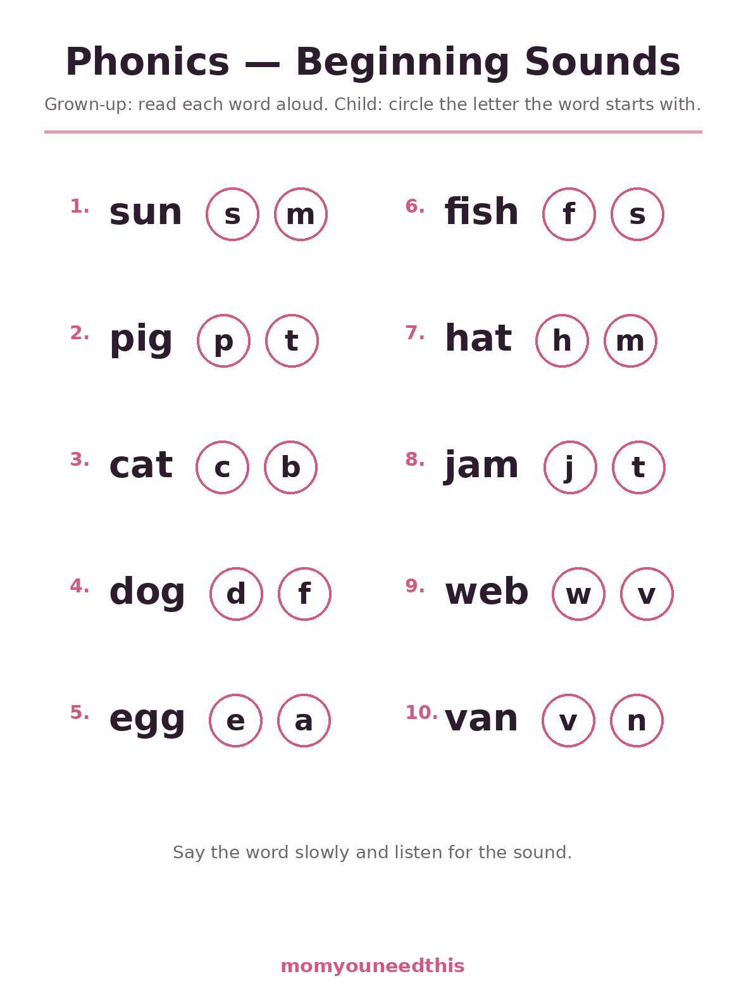
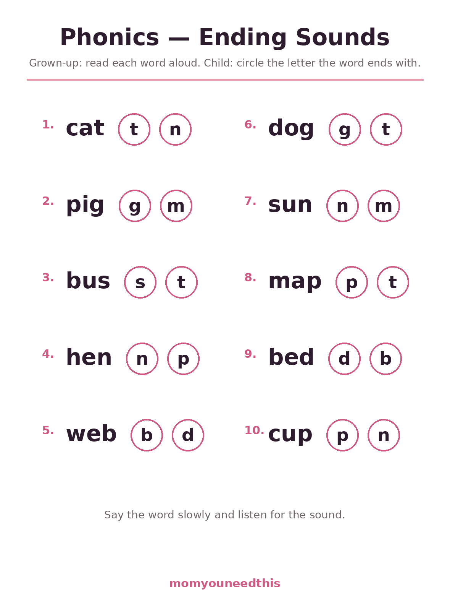
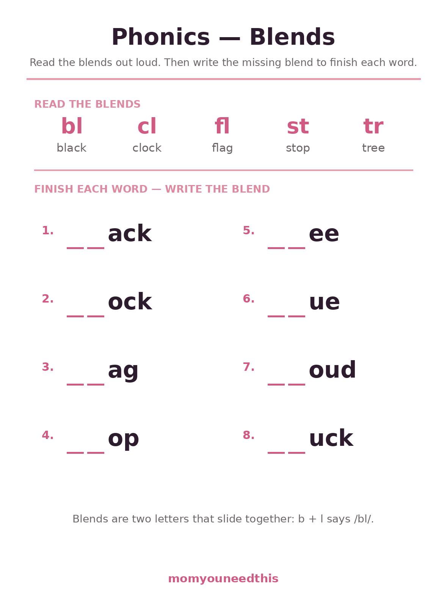
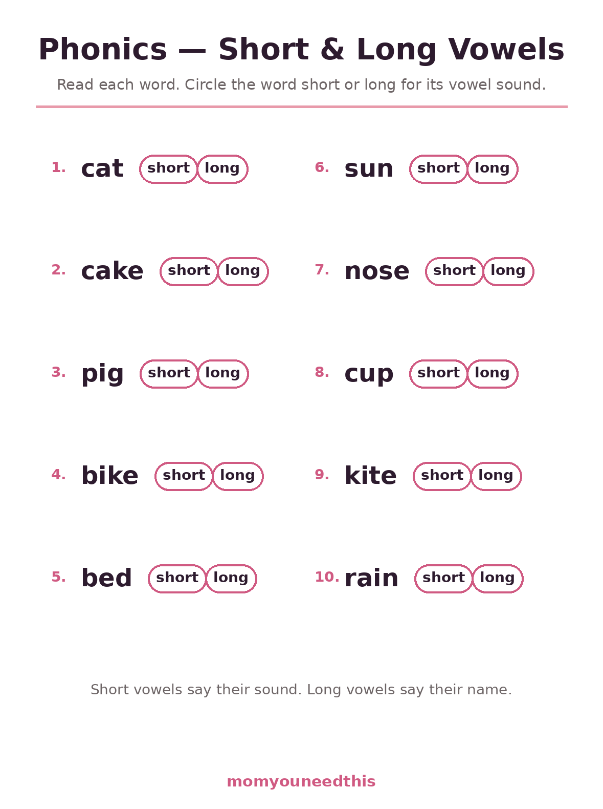

Phonics Worksheets Beginning Sounds, Ending Sounds, Blends & Vowel Sounds
Phonics worksheets train the listening side of reading — hearing where a sound sits inside a word. These four free sheets for ages 5 to 7 cover beginning sounds, ending sounds, blends, and short and long vowels, and they need no pictures or cutting: a grown-up reads each word aloud, and your child listens, thinks and circles. Print at home, no signup.
Last updated: October 21, 2026
Quick Answer
This set has four free phonics sheets. Beginning Sounds and Ending Sounds hold ten words each — a grown-up reads the word aloud and your child circles the letter it starts or ends with. Blends asks children to read five blends (bl, cl, fl, st, tr) and then complete eight words by writing the missing blend. Short & Long Vowels gives ten words to read and sort by circling 'short' or 'long'. Nothing is pre-marked anywhere: every answer is the child's own listening. Made for ages 5 to 7.
At a Glance
- Skill: Phonemic awareness — sounds, blends, vowels
- Ages: 5–7 (kindergarten–grade 1)
- Sheets: 4
- You need: A pencil — and a grown-up to read words aloud
- Answers: Never pre-marked
- Cost: Free — print at home
👂 Beginning Sounds & Ending Sounds
These two sheets look almost bare — a word, two letters in circles, nothing else — and that bareness is deliberate. There are no pictures to guess from and no letters in the word to pattern-match, because the work is meant to happen in the ear. You read a word aloud at a natural pace; your child says it back slowly, listens for the very first sound (or, on the second sheet, the very last one), and circles the matching letter. Beginning sounds come first developmentally — children hear the start of a word long before they can hear its end — so do the sheets in that order, days apart if needed.

👂 Download Your Free Beginning Sounds Worksheet
Ten words — sun, pig, cat, dog, egg, fish, hat, jam, web, van. You read aloud; your child circles the starting letter.
⬇️ Download Free Worksheet 🖨️ Print🎁 Free printable for ages 5–7

👂 Download Your Free Ending Sounds Worksheet
Ten words — cat, pig, bus, hen, web, dog, sun, map, bed, cup. This time your child listens for the letter each word ends with.
⬇️ Download Free Worksheet 🖨️ Print🎁 Free printable for ages 5–7
🧩 Blends & Vowel Sounds
The second pair of sheets moves from single sounds to the patterns inside words. The Blends sheet opens with five blends to read together — bl, cl, fl, st, tr, each with its example word — then drops the blend from eight words and hands over the pencil: finishing '__ack' into 'black' is the moment many children first write a word they built themselves. The Vowels sheet closes the set with the subtlest listening of all: ten words, each with a choice between 'short' and 'long'. There is no trick and nothing is pre-marked — a child who can hear that cat is short and cake is long understands something deep about how English works.

🧩 Download Your Free Blends Worksheet
Five blends to read — bl, cl, fl, st, tr — then eight words to finish: black, clock, flag, stop, tree, blue, cloud, truck.
⬇️ Download Free Worksheet 🖨️ Print🎁 Free printable for ages 5–7

🧩 Download Your Free Short & Long Vowels Worksheet
Ten words — cat, cake, pig, bike, bed, sun, nose, cup, kite, rain. Circle 'short' or 'long' for each vowel sound.
⬇️ Download Free Worksheet 🖨️ Print🎁 Free printable for ages 5–7
🌱 Ears Before Eyes: Why Listening Comes First
It surprises many parents that some of the most important reading practice involves no reading at all. Before a child can match letters to sounds on a page, they have to be able to hear that sounds exist inside words — that 'sun' is not one blob of noise but three sounds in a row. Researchers call this phonemic awareness, and it is built entirely through the ear: rhyming games, clapping syllables, and exactly the kind of slow listening these sheets ask for. A child who can hear that sun starts with /s/ and ends with /n/ is ready for letters to mean something; a child who cannot hear it yet will find flashcards frustrating no matter how pretty they are. That is why the instructions on the sounds sheets are written the way they are: a grown-up reads, the child listens. Ten words take perhaps six minutes, and those six minutes of pure listening are doing foundational work that worksheets full of tracing simply cannot do.
🎲 Make It a Game, Not a Test
The fastest way to kill a listening exercise is to grade it. Keep the pencil light and the mood lighter: these sheets work beautifully as a detective game ('I'm thinking of the sound at the end of... bus'), with the printed sheet as the scorecard rather than the exam. Plenty of phonics activities worksheets ask children to cut, sort and glue picture cards; these four sheets take the quieter route — the same listening work with nothing but a pencil, which makes them easy to repeat in the car, at the kitchen table, or while dinner cooks. The repeat is where the value is. Print three copies of Beginning Sounds and you will watch a pattern across the weeks: first the child needs each word said twice, then once, then they are reading the word themselves before you can — at which point the sheet has done its job and it is time to move on to blends.
🖨️ How to Use These Worksheets
- Sit side by side. These sheets are a duet, not a solo: on the two sounds sheets you read each word aloud and your child does the listening and circling. Keep your voice clear and natural — no exaggerated enunciation.
- Do not point at the letters first. The whole exercise is hearing before seeing. Read the word, let your child say it back slowly, and only then look at the two choices.
- Never pre-mark or hint. Every circle on these sheets is empty on purpose. A wrong circle followed by a good conversation ('let's say it super slowly — sssun — what do you hear at the start?') teaches more than a right answer copied from a hint.
- One sheet, then stop. Listening this hard is tiring for small brains. Finish with the word families game another day rather than stacking sheets.
📚 More Reading for Moms & Kids
🧒 Older Kids
Every worksheet in the Older Kids section, in one hub. Browse Older Kids.
🔤 Word Families
Six families to read, trace, write and sort. Try word families.
🍎 CVC Word Worksheets
Twenty short vowel words in a read, trace, write routine. Practice CVC words.
👀 Sight Words
Flashcards and word lists for the words that cannot be sounded out. See the flashcards.
✏️ Sight Word Practice Pages
Read, trace and write sheets for all 92 Dolch words. Practice sight words.
✍️ Cursive Practice Sheets
Trace and copy every letter, joined up. Try cursive.
❓ Phonics Worksheets FAQ
Why does a grown-up need to read the words aloud?
Because on the Beginning Sounds and Ending Sounds sheets, the skill being trained is listening, not reading. If the child reads the word themselves, the eyes do the work and the ears coast. When a grown-up reads it, the child has to hold the sound in mind, say the word back slowly, and only then choose a letter — that is phonemic awareness, and it is one of the strongest predictors of later reading success.
Are these phonics worksheets for kindergarten or grade 1?
Both. Beginning and ending sounds are core kindergarten work, and the same sheets serve grade 1 children who need the listening practice without babyish pictures. The Blends and Vowels sheets lean grade 1–2. Because the design is clean rather than cartoonish, older children who need the practice do not feel talked down to.
What is a blend?
A blend is two consonants whose sounds slide together — bl in black, cl in clock, fl in flag, st in stop, tr in tree. Each letter keeps its own sound (unlike sh or ch, which make a brand-new sound together). The Blends sheet asks children to write the missing blend at the start of eight words they have just read at the top of the page.
How is this different from the CVC and word family pages?
Those pages are about reading words on paper: decoding letters into sounds. This page is about hearing sounds inside spoken words — the skill that comes first and makes decoding possible. The sets pair well: a week might hold one sounds sheet, one CVC sheet and one family sheet, each training a different part of reading.
Are the phonics worksheets free?
Yes — all four sheets are free to print at home, as many times as you like, with no signup and no email.